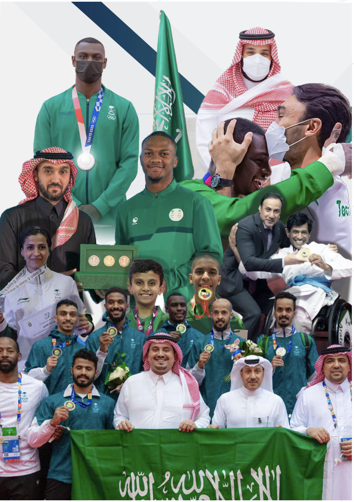

.بالاطلاع على تاريخ رياضة الكاراتيه على المستوى المحلي نجد أن هذه الرياضة أدخلت إلى المملكة العربية السعودية وتم تأسيس أول اتحاد للعبة عام 1395هـ / 1975م بقرار من صاحب السمو الملكي الأمير / فيصل بن فهد بن عبدالعزيز "رحمه الله"، والجدير بالذكر أنه لم تدرج لعبة الكاراتيه ضمن الألعاب الأولمبية إلا حديثاً، بعد أن أضيفت خمس رياضات جديدة إلى برنامج دورة الألعاب الأولمبية وهي: الكاراتيه، والتسلق، وركوب الأمواج والتزلج، والبيسبول لترتفع عدد الرياضات في برنامج أولمبياد طوكيو إلى 33 رياضة مقابل 28 في أولمبياد ريو دي جانيرو، وتعد لعبة الكاراتيه من أشهر وأقدم أنواع فنون القتال وتصنف تحديداً ضمن رياضات الدفاع عن النفس وكلمة "الكاراتيه" هي مصطلح ياباني يقصد به "اليد الخالية" لتعبر عن نوع من الدفاع عن النفس في وقت منع فيه استخدام السلاح من جانب القوات اليابانية، وتطورت الكاراتيه وانتشرت لتصبح رياضة مشهورة تقام لها العديد من البطولات ويشارك فيها لاعبون من شتى بقاع العالم.على الصعيد المحلي تشهد رياضة الكاراتيه قيام (141) نادياً و(53) صالة ومراكز خاصة موزعة على مختلف مناطق المملكة بعدد لاعبين قدره 228,603 لاعب ولاعبة في مختلف درجات الأحزمة، إلى جانب التدريب في المدارس والجامعات والكليات والقطاعات العسكرية لزيادة ممارسة هذا النوع من الألعاب القتالية لفنون الدفاع عن النفس، ووصول اللعبة لأكبر قدر ممكن من شرائح المجتمع المختلفة ورفع مستوى اللياقة وزرع الثقة بالنفس والدفاع عن النفس.
| 1- تصنيف اللاعبين المحلي |
| 2- اختبارات الاحزمه ومواعيدها وتسليم الشهادات |
| 3- مشاهده لايف للمواجهات |
| 4- سجل نتايج المباريات لايف |
| 5- اختبار افتراضي للحصول على شهادات الحزام قبل التسجيل في الاختبار الحضوري |
| 6- نتايج الترتيب العام في كل البطولات |
| 7- قرعات المنافسه |
| 8- التسجيل في البطولات |
| 9- التسجيل في اختبار الاحزمه |
| 10- تسجيل الحكام في البطولات |
| 11- اعلانات للفعاليات وورش العمل |